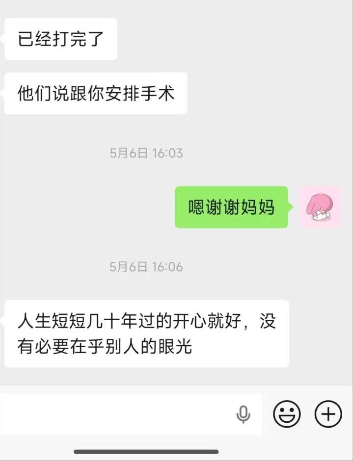

ニャンコ
@sophhhsama
快转几年我要看到我也发这个帖———

ニャンコ
@sophhhsama
快转几年年我要看到我也发这个帖——— https://t.co/FExWev5Cwt
komi
@ChrysalisQWQ
还有十几天就要手术啦，一路颠颠簸簸的走到现在真的不容易，很幸运自己有了开明的家人，人生短短几十年，自己开心就好，没必要在乎别人的眼光！
也谢谢陪了我整整三年的他❤️我们一起走过好与不好，但最后依然在一起，陪我迎来最重要的一步。谢谢你一直都在
接下来就要迎接全新的、真正属于我的人生！ https://t.co/Dk6r50nf0N